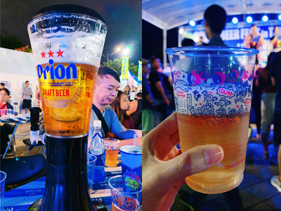

ORION BEER FEST in TAIPEI 一起狂喝一整夜吧!
written by VC ｜ 2022-10-18
999
這禮拜是Veekend計畫的第一週，聽朋友說花博有個Orion啤酒之夜。凡事起頭難，第一週就先簡單安排行程，試試水溫吧！
據說是日本觀光客必吃的滷肉飯
- 這幾年非常受陸客/日客歡迎，遊覽車總是一車一車的來。一樓大多是台灣的客人，二樓就都留給觀光客用餐了，另外還有現打新鮮果汁，用餐環境不錯。
2019 ORION 沖繩啤酒節
個人評分：4.2
- 每年最大的沖繩ORION啤酒祭典即將在10/19舉辦，會場改到花博公園的花海廣場，大家別跑錯了！
- 時間：10/19、10/20

新生啤酒好喝的三個理由
- 其一：更加「新鮮清爽」的口感，通過新的過濾工序減低了麥汁的雜味成分，調節最佳的發酵溫度，讓香氣更加沁人心脾。 重新調節啤酒花的添加比率，突出酒花原來具有的清爽苦味。
- 其二：美味持久。鲜度長存！ 通過加料和過濾的兩道工序抑制氧化，使得鮮度更加持久，長時間保持美味。
- 其三：再有，奶油般口感持久的「泡沫」保留更多的來自麥芽的蛋白質，使泡沫更加柔軟持久。

啤酒啤酒啤酒啤酒啤酒啤酒啤酒啤酒啤酒啤酒啤酒
保留更多的來自麥芽的蛋白質，使泡沫更加柔軟持久。
Orion Beer
保留更多的來自麥芽的蛋白質，使泡沫更加柔軟持久。的蛋白質，使泡沫更加柔軟持久。的蛋白質，使泡沫更加柔軟持久。的蛋白質，使泡沫更加柔軟持久。的蛋白質，使泡沫更加柔軟持久。
Orion Beer
保留更多的來自麥芽的蛋白質，使泡沫更加柔軟持久。
醉不上路
一直以來我有個在草地翻滾的願望，但在理性的作用下，一直無法去實現，謝謝你 Orion Beer。
本週景點地圖
- #花博公園
- #中山區
- #台北市
- #啤酒季
Prev Post
日本的視覺和聲音藝術家與天橋萬聖趴
Next Post
聲音藝術家與天橋萬聖趴日本的視覺